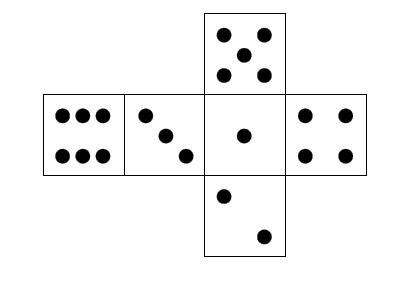
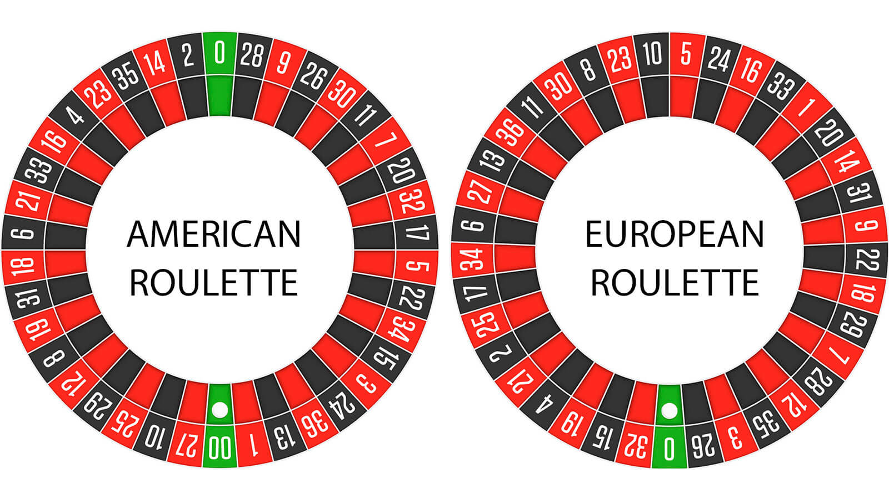

Introduction¶
Why Study Probabilities?¶
Over the long term, the S&P500 outperforms corporate bonds, which in turn outperforms government bonds. This is due to uncertainty and risk.
Oswald Grübel (former CEO of Credit Suisse and UBS) said referring to banks: “The more risk you are willing to take, the more profitable you will be.”
Patrick Leach (author of “Why Can’t You Just Give Me The Number?”) on the other side:
“Business adds value because of the existence of uncertainty.”
“… all value generated by business executives comes - directly or indirectly - from how they manage uncertainty. Without uncertainty, a share of a company’s stock is effectively a bond, with guaranteed cash flows. Guaranteed bonds don’t need management. But stocks (or rather, companies issuing stock) certainly do.”
Managers must take important decisions in uncertain business environments.
The most fundamental concept of dealing with risk and uncertainty? Probabilities!
Some Terminology¶
Random Experiment
A process leading to an uncertain outcome.
State Space
The state space is the collection of all possible outcomes of a random experiment, usually denoted by \(S\).
Basic Outcome
A possible outcome of a random experiment.
Event
An event is a subset of basic outcomes. Any event which consists of a single outcome in the state space is called a simple event.
Probability
A probability is a measure for how likely an event of a random experiment is.
Hint
The probability on an event \(A\) is usually denoted by \(P(A)\).
Examples¶
Before we can talk about probabilities, we need a good understanding of random experiments, state spaces, basic outcomes and events. Let us look at some simple examples.
Example 1: The Six-Sided Die¶
{kind=link}
Basic Outcome: A basic outcome of rolling a six-sided die is for example a 6.
Random Experiment Rolling a six-sided die is a random experiment, since the outcome is uncertain. However, once the die is rolled, the outcome can be precisely assessed.
State Space: The state space \(S\) for rolling a six-sided die is equal to \(\{1, 2, 3, 4, 5, 6 \}\).
Event: The event \(A\) = “score is smaller than 4” is \(\{1, 2, 3\}\). The event \(B\) = “score is 8” is equal to \(\emptyset\) (the empty set), because this is impossible with a six-sided die.
Example 2: Roulette Wheel in Monte Carlo¶
{kind=link}
While a roulette wheel in Las Vegas has two zeros, a roulette wheel in Monte Carlo only has a single zero. Besides this difference, both roulette wheels are the same.
Every outcome on a roulette wheel is equally likely, because each basket at each number has exactly the same size. Therefore it is just as likely that the ball lands on the single zero as on any other number on the roulette wheel.
Random Experiment: Rolling a ball in a roulette wheel is a random experiment, since the outcome is uncertain. However, once the ball lands in a basket, the outcome can be precisely assessed.
State Space: The state space \(S\) for a roulette wheel in Monte Carlo is equal to \(\{1, 2, ..., 35, 36, 0\}\).
Basic Outcome: A basic outcome of a game of roulette could be for example “18”, “0”, “black” or “odd and red”. Each outcome represents exactly one number, has a color and is even or odd.
Event: The event \(A\) = “the ball lands on a number smaller than 4” is \(\{1, 2, 3\}\). The event \(B\) = “the ball lands on red and black” is \(\emptyset\) (the empty set), because this is impossible. This can be seen on the map of the roulette wheel above. There are no numbers that are red and black at the same time. Now we can turn to the definition of a probability. In fact, there are three possible definitions that are applied in practice.